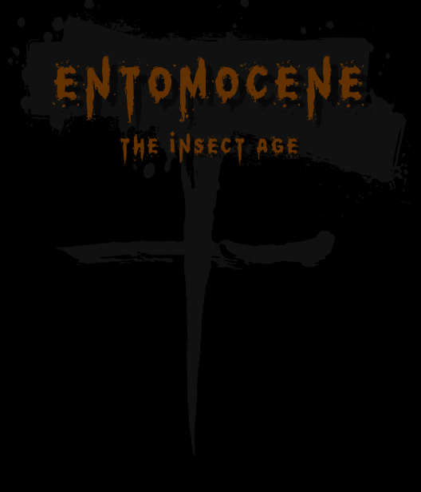
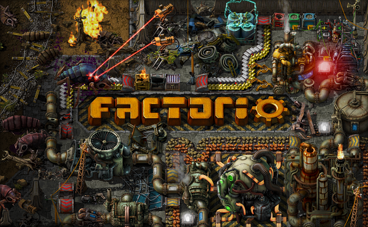
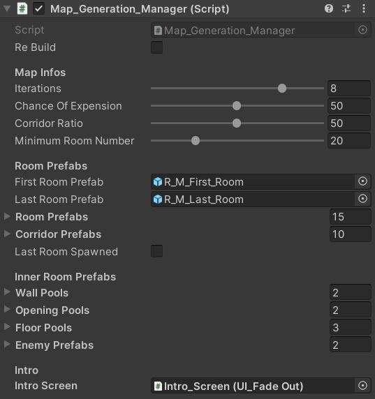
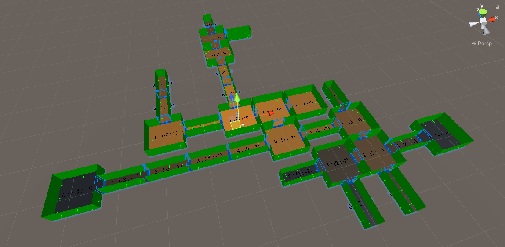
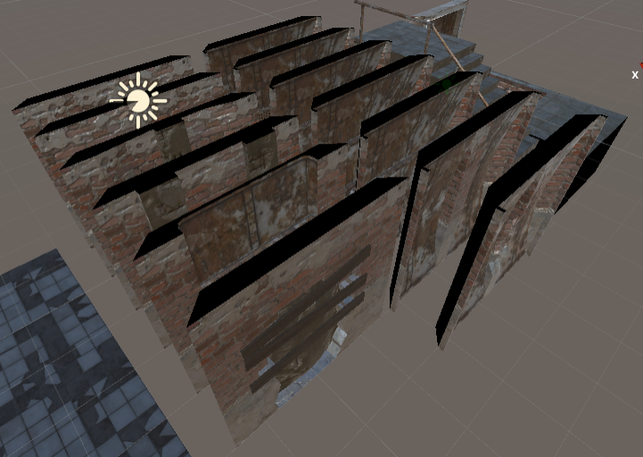
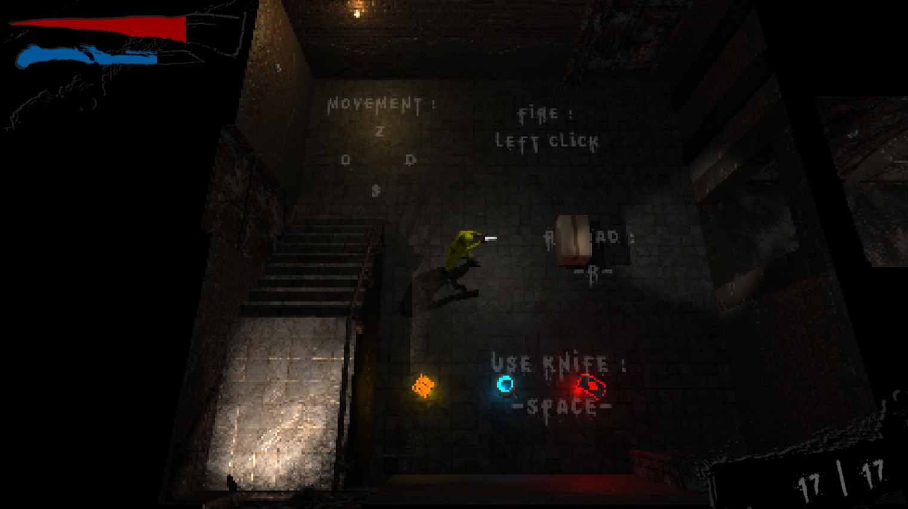

Entomocene
The Insect Age
Ce projet est réalisé dans le cadre du projet de fin d'année de Cycle 2 à Ludus Académie.
Entomocene, c'est quoi ?
Entomocene (The Insect Age) est un jeu beat them all de type Rogue Like mettant en scène une scientifique combattant des insectes géants. C'est un concept de jeu qui me permet de me confronter à plusieurs difficultés tout en réalisant un jeu qui me tient à coeur et qui, je l'espère, vous plaira.
Contexte
Intentions
Le jeu a pour intention de défouler le joueur dans une expérience rapide dynamique et pleine d’action. De plus, le joueur sera plongé dans un univers glauque et repoussant. Les ennemis rampants et grouillants dans tous les sens ajouteront au malaise.
Références
En terme de gameplay, je m'inspire du jeu The Binding of Isaac. C'est un jeu simple en apparence simple mais cachant une complexité incroyable et un renouvelement du gameplay infini.

L’aspect graphique du jeu se rapproche du jeu Factorio avec ses modèles 3D et volontairement pixélisés. De plus l’ambiance globale se rapproche à la fois de Factorio mais aussi de The Binding of Isaac concernant l’impression d’insalubrité et de gêne que l’on peut ressentir.
Un environnement procédurale
Mon jeu étant un Rogue Like, j'ai décidé de générer l'environnement procéduralement afin de garantir une expérience de jeu inédite à chaque partie. La génération se divise en plusieurs étapes simples qui, mises bout à bout, donnent une carte cohérente et théoriquement infinie.
Réglage de la carte
La future carte est, à son commencement, un objet vide comportant un script [Map Manager]. C'est ce script qui va accueillir les premiers réglages. Son rôle est d'instancier la première salle de la carte.
Instanciement récursif
Une fois la première salle générée, elle va, en fonction des paramètres du [Map Manager], générer des nouvelles salles connexes. Ensuite, les nouvelles salles prendront le rôle de la première salle et vont générer à leur tour de nouvelles salles. Ce processus continu jusqu'à ce les conditions du [Map Manager] soient respectées.
Habillage des salles
A ce stade, la carte est quasiment terminée mais elle manque de réalisme. C'est pourquoi, tous les murs, sols, portes vont être remplacer par des assets aléatoirement piochés dans des listes.
Placement de divers éléments
Pour finir, on place les accésoires, les objets et les ennemis. A l'instar des murs, sols, portes, les accéssoires, objets et ennemis sont piochés dans des listes.
Lien vers les releases
Galerie
Pour agrémenter l'univers du projet, j'ai créé plusieurs visuels :